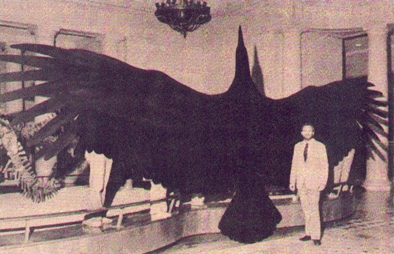

Cryptids are the hidden creatures of the world. The beasts, bipeds and sea monsters of legend. They captivate our imagination, fill our minds with wonder, and make us confront the simple question:
ARE THEY REAL?
Bigfoot is arguably the most famous cryptid. Long before the 1967 Paterson-Gimlin film, tales of wild men were told by indigenous groups. Bigfoot sightings occur throughout America, and include regional variants, such as Florida's Skunk Ape.
While many bigfoot sightings are believed to be mistakes or hoaxes, bigfoot remains a cultural icon throughout North America. This is particularly true in the Pacific Northwest, where many of the sightings are concentrated.
Why is bigfoot referred to singularly? The name derives from Chief Big Foot, a Lokota leader from the late 1800s. If bigfoot were to exist, there would likely be more than one. The plural is bigfoots, not bigfeet.
Freshwater depths are seldom explored, and many believe the deepest depths conceal monsters of legend. North America is filled with images and lore about lake monsters. Some hold local appeal, while others, like Ogopogo, have near-Nessie status.
Originating in Puerto Rico, the Chupacabra (goat-sucker) is known to ravage livestock and terrify farmers. Witnesses purport the chupacabra as a reptilian kangaroo, one that kills animals by draining them entirely of their blood. Sometimes they also depicted as hairless dogs. Since initial sightings in 1995, many people have reportedly killed chupacabras.
North America is full of lesser-known cryptids, from those that fill the skies, to those that stalk forests. From harbingers to cannibals, and everything in between. This list certainly isn't comprehensive.
Native to Point Pleasant, West Virginia, mothman was sighted exactly a month before the collapse of the Silver Bridge in 1967. Mothman has since been associated with being a warning sign for impending disasters.
Said to stalk the forests of the northeastern US and Canada, the wendigo haunted the legends of Algonquian-speaking peoples. A malevolent, cannabalistic spirit, the wendigo is associated with famine and winter.
A demon that lurks in the depths of three Oklahoma lakes, the Oklahoma Octopus is blamed for high rates of drowning and mysterious lakeside disappearances.
16th century folk tales tell of a woman who cursed her youngest child to be the devil. The legend became the basis for the Jersey Devil, a winged, hoofed, goat-headed creature that inhabits the pine barrens of modern New Jersey.
Rooted in indigenous mythology, the thunderbird is often viewed as a controller of weather and a rival to underwater spirits. In cryptozoology, thunderbirds are enormous, plane-sized birds that have been spotted from Alaska to Texas.
{kind=link}
{kind=link}
{kind=link}
{kind=link}
{kind=link}
{kind=link}
{kind=link}
{kind=link}
{kind=link}
{kind=link}
{kind=link}